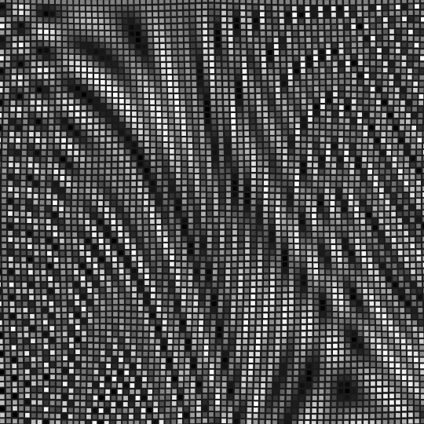
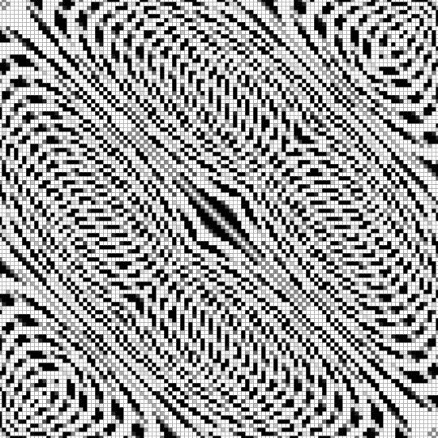
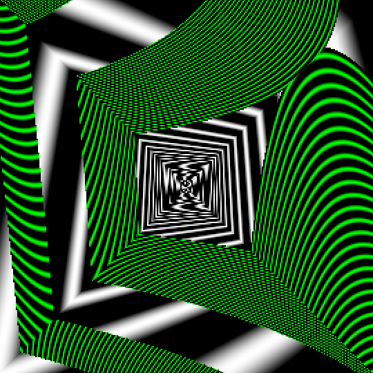
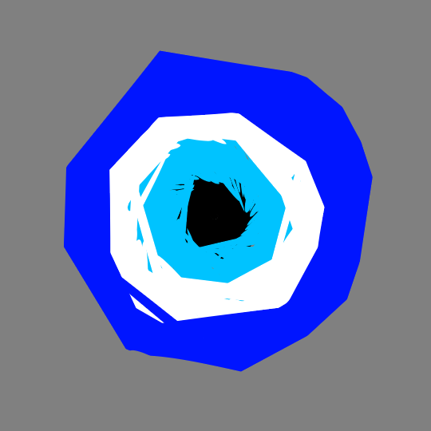
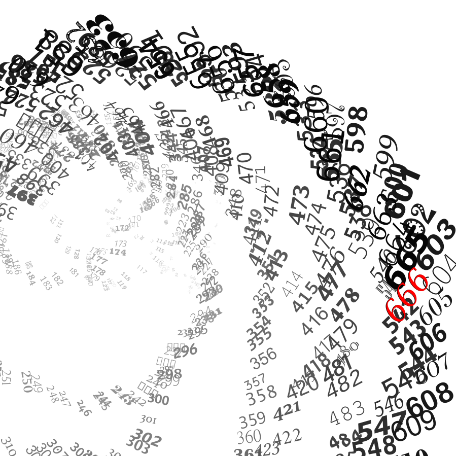
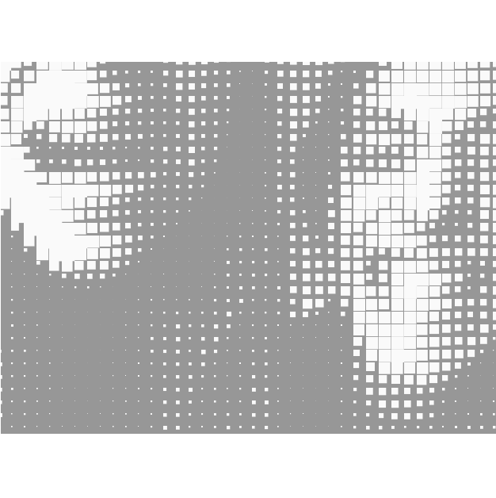
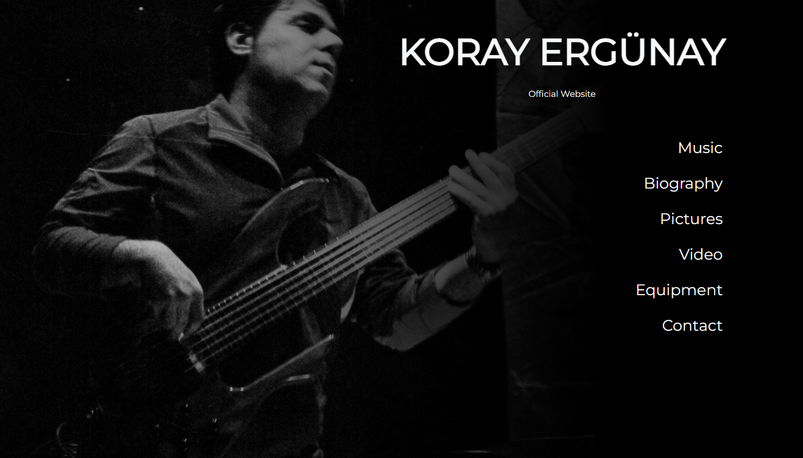
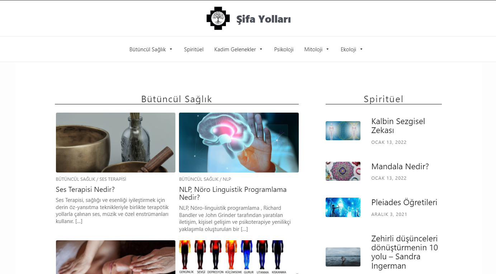
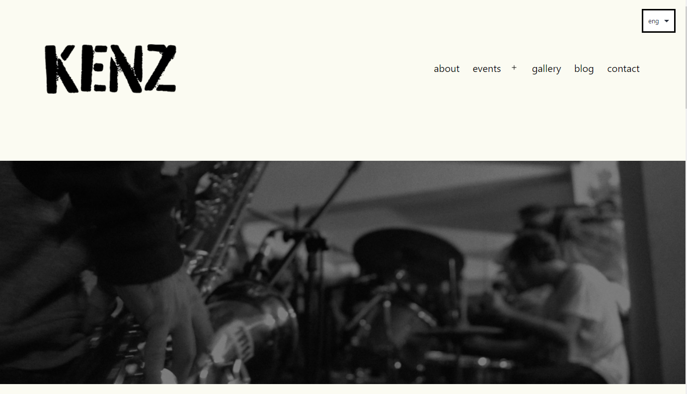
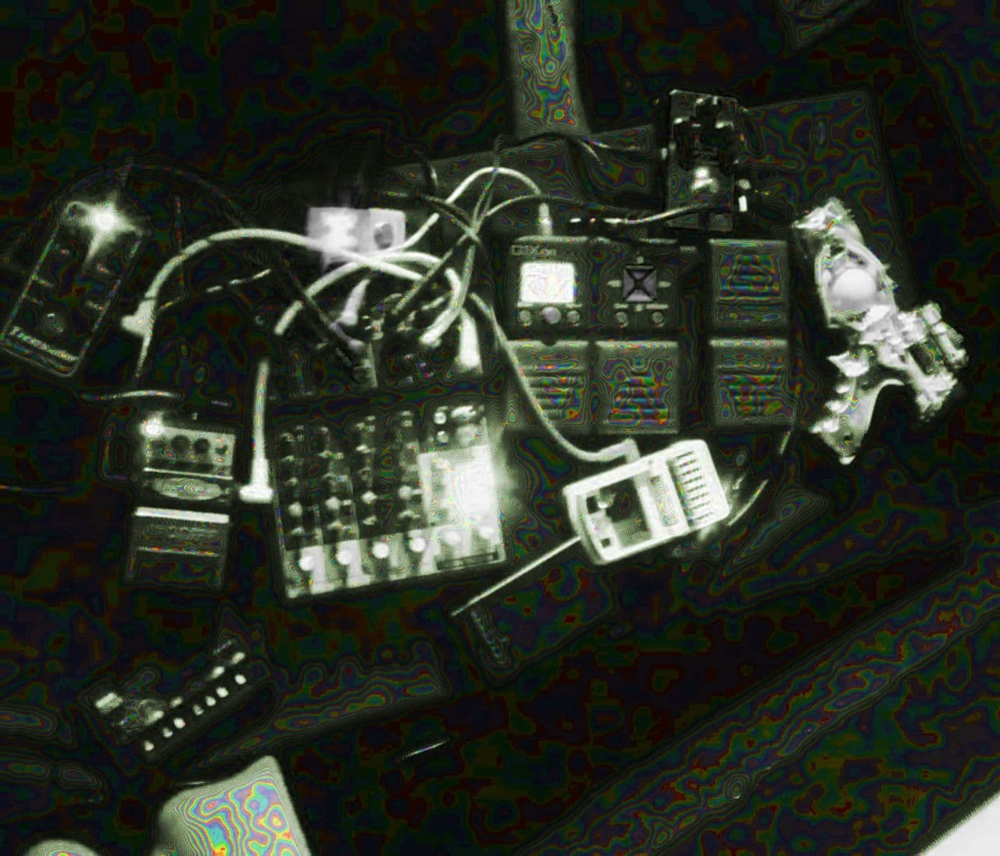

alparslan /*ap0*/ teke
is an ex-engineer-to-be, current sociologist, and future designer/artist.
has attended mechanical engineering and sociology schools. holds a bachelor's in the latter.
performs solo and collaborative noise acts.
draws and animates with code using algorithms.
engages with text at several frontiers.
ap0’ draws and animates with code using algorithms in processing(java) and p5(javascript).

exploring textures and folds with trigonometric expressions on the cells of a grid.
animation


deliberately messing up with degrees and radians can yield interesting outcomes!
animation


practice in arrays, rotate and translate.
image

babysteps in working with live image.
image
ap0' is familiar with web design tools such as bootstrap and wordpress.
don't hesitate to get in touch if you'd need help with your portfolio page or small-scale web applications.



unpublished
wordpress/css

23-08-17 MultiRAID2: Cruising on Limits w/ Isabel Morti (İzmir) >video<
06-01-18 A.I.D Ankara#1 (Ankara)
10-11-18 A.I.D Ankara#3 w/Cihan Gülmez, F.Can Mekikoğlu, Tess Waggoner (Ankara)>live recording<
4-08-18 Art Is Dead? Day#2 w/k.l.s.s. (İstanbul)
01-09-18 Volksamt! Hata Yapın Lansman Partisi (İstanbul)
2-03-19 A.I.D Room #12 as part of Earaction (İstanbul)
22-03-19 A.I.Dzone (Ankara)
19-04-19 A.I.D Den Haag #1 as part of G/A/G (Den Haag) >video<
23-06-19 Multiversal X A.I.D (Berlin)
24-08-19 Badire Radyo Açılış Etkinliği w/F.Can Mekikoğlu, Tess Waggoner (Ankara)
25-08-19 Volksfest! II w/Tan Babür (İstanbul)
17-05-20 Splash Scene w/Nev Ne as K-Makine (online) >video<
12-06-20 Club CoWed w/Nev Ne as K-Makine (online)
an exploration in granular techniques with samples from no-input mixing sessions, field recordings, classical music, and The Conet Project.
a rather violent composition made of analog no-input mixing and modular synthesis in
PureData’s Automatonism.
the piece culminates in a sonic storm that creates an immersive binaural experience.
excerpt from a glitch that plays to eternity, found while circuit-bending a keyboard.
can it be called a ready-made?
or, would the uninformed ear mistake it for a human-made composition?
a composition with digitally synthesized sounds accompanying an excerpt from the
Xenofeminist Manifesto.
an effort to zoom out from sonic & procedural qualities of musical work
to incorporate other fields and convey messages more directly.
ap0' is engaged with text at several frontiers, including academic work, translation, cut-ups, and editing.
below are some works authored/translated/edited so far;
Electronic musical device artisanship.
interviews, digital ethnography.
2200 words. sociology of work.
link will be added.
Achievements and limitations of major transnational
action in response to global e-waste crisis.
literature research, postcolonial critique.
4000 words. environmental sociology.
>link<
Gürültüyle Dolu: Teori ve Japon Gürültü Müziği
original title:
Full with noise: Theory and Japanese noise music.
auth. Paul Hegarty. english→turkish.
5800 words. AIDzine#8.
>link<
A.I.D Zine #8, #9, #10
artisdead.in
>link<